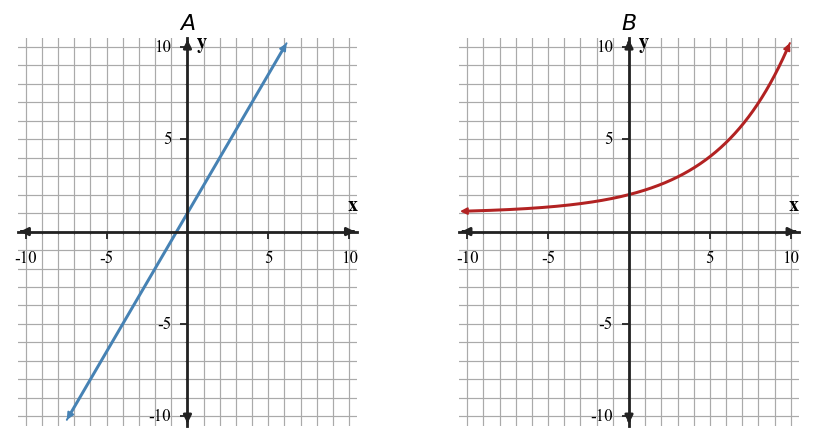

Start with what you can solve independently. Then find different classmates to compare reasoning or help with problems you have not completed. Record your own work and have each partner initial one problem they discussed with you.
Choose the factor pair that factors $x^2+5x+6$.
- $1$ and $6$
- $2$ and $3$
- $-2$ and $-3$
- $5$ and $6$
Expand each product to check the middle term.
- $(x+4)(x+2)$
- $(x-5)(x+1)$
- $(2x+3)(x-1)$
Factor $12x^2+11x-5$ by splitting the middle term. Then verify by multiplying your binomials.
Analyze the structure of $kx^2+7x-6$. Find two possible integer values of $k$ that make the trinomial factorable over the integers, and explain how the product-sum structure changes.
For $2x+3y=12$, what coefficient would the second equation need on $y$ so adding the equations could eliminate $y$ immediately?
What graph feature tells you that a system has no solution?
Solve by substitution, then check your answer in the equation not used first.
Rewrite the first equation to isolate $y$, then solve the system by substitution.
Solve by substitution. State whether the result is one solution, no solution, or infinitely many solutions.
For the taxi plans \$5 plus \$2 per mile and \$11 plus \$1.25 per mile, compare solving by graphing, substitution, and elimination. Which method gives the cleanest paper-only solution, and why?
A student models a coin problem with $n+q=44$ and $5n+25q=6.80$. The student says the system is ready to solve because the money equation uses cents and dollars together.
Assess the reasonableness of the model, revise it if needed, and explain how the units affect the solution.
A poster claims to model “students need at least 20 total practice problems, with $x$ online problems and $y$ paper problems” using $x+y\lt 20$ and a dashed boundary.

- Revise the inequality so it matches the phrase “at least.”
- Describe the correct boundary and shading.
- Give one point that should be feasible and one point that should not.
A graph is a straight line with negative slope. Name the family and describe the direction of change.
A table begins $2, 5, 10, 17, 26$ for consecutive inputs. Identify the repeated pattern that supports a family choice.
A student says both relationships in the figure are linear because they both increase. Estimate the outputs at three equally spaced $x$-values for each graph, compare the first differences, and identify one feature that separates the families.

You need to write a translated absolute value function with vertex $(2,-5)$. Construct a strategy that starts from key points instead of memorizing a rule, then use it to write the equation.